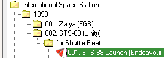
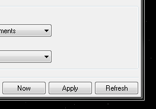
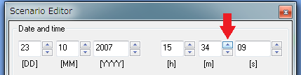
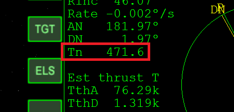

ISS v3.2 スペースシャトルの打ち上げ
ISS v3.2のスペースシャトルミッションでは、9分後に自動で打ち上げが開始されます。
このタイマーを解除する方法はないのですが、打ち上げのタイミングと方位が微妙にずれています。
効率のよい打ち上げのためには、シナリオに少し手を加える必要があります。
今回は、STS-88（ユニティモジュールの打ち上げ）を例に、具体的な手順を解説します。

方位の変更
まず、以下のフォルダを開いてください。
Orbiter\Scenarios\International Space Station\1998\002. STS-88 (Unity)\for Shuttle Fleet
001. STS-88 Launch (Endeavour).scn
このファイルをメモ帳などのテキストエディタで開く。
TGT_HEADING 42.407 310という行があるはずなので、
TGT_HEADING 40.8 310に書き換える。（右側の数字はそのまま）
そのまま上書きするか、適当な名前をつけて保存してください。
STS-88以外のシナリオでも、同じ数字で問題ありません。
打ち上げ時間の調整
ゲームを起動する前に、シナリオエディタの使い方を確認してください。
シナリオエディタ 基本操作と日時の変更
さきほど保存したシナリオでゲーム開始。
Align Planes MFDを起動する。
ISSをターゲットする。
TGTをクリックして、Enterキーを押してISSと入力。Enterを押す。
Ctrlキーを押しながらF4キーを押して、シナリオエディタ（Scenario Editor）を選択。OKをクリック。
シナリオエディタ右下のDateをクリックして、日時の変更画面にしておく。
画面左下に表示されている残り時間を確認して、T-01:00になるまで待つ。
T-01:00になったら、Rキーを押して0.1倍速にする。
重要：シナリオエディタのRefreshボタンをクリック。

m（分）の△ボタンを何度かクリックする。

Align MFDのTn（ノードまでの時間）が240～300秒の範囲になるまで時間を進める。

Tキーを押して、時間の進み方をもとに戻す。
自動で打ち上げが開始されるので待つ。
解説
計算上はおよそ42°の打ち上げ方位で問題ないのですが、
打ち上げ方位（Launch Azimuth）を求める方法
スペースシャトルは打ち上げ途中でロールを挟むので、どうしても最終的にずれが生じてしまいます。
これを修正するために、打ち上げ方位を40.8°に設定しておきます。
また、一部のシナリオで自動打ち上げのタイミングが早すぎるため※、シナリオエディタの時間移動機能を使って打ち上げを遅らせる必要があります。
※おそらく史実通りの時間なのだろうと思いますが、Orbiterではうまくいかないようです…
何も対策をしない状態で打ち上げると、一部のシナリオでは、RInc（ターゲットとの軌道傾斜角のずれ）が3.0を超えることもあります。
Delta Gliderなら簡単に修正できる程度の誤差ではありますが、非力なスペースシャトルにとっては無視できない数字です。
打ち上げの段階で微調整しておくことで、ランデブーの難易度を大幅に下げることができます。